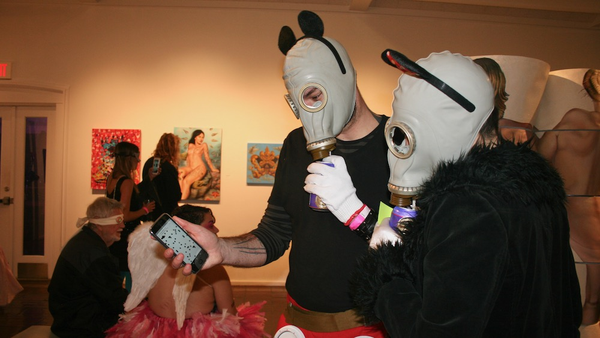

in this presentation i'll be discussing four of my most recent
smartphone works from a research and artistic perspective. I'll talk
about each work individually but also the themes that tie them together.
And finally i'll discuss my plans future work and for involving students
in this research while at College of Charleston.
Themes
Ubiquitous computing
Audience participation
Networked distributed performance
Gamification of sound and music experiences
How can we use smartphones in a collective way to bring people together
to make art and music? How can we use smartphones to encourage awareness
of nature?
Expanded locations and times for performances, including any people
regardless of skill level using the ubiquitous smartphone as an
instrument allows for the breakdown between audience and performer.

A more perfect union (2017)
https://ampu.siteA more perfect union is an experiment in participatory real-time
composing, where the audience chooses the outcome of the work by
evaluating the sounds they hear. The longer a person listens to a melody
the more likely an aspect of that melody persist in future generations.
The work is based on an evolutionary genetic algorithm, in which the
fittest sound of a group passes on its genes, combines with another fit
sound, and creates a new one with the best of both. The piece ends when
an emergent sound is found that should hopefully satisfy the
audience.
This is a performance version of the work that took place at LSU Museum
of Art on March 4, 2018
Audience participation
I wanted to create a work that went beyond the idea of audience
participation by making the audience the sole creators of the work. Here
there is no audience performer divide, every participant is both the
audience and performer. The participants don't need any special skill to
be involved, they simply feed their preferences into the algorithm by
listening or skipping a melody. They don't need to know how the piece
works to appreciate its development.
The League of Automatic Music Composers (Perkis, Horton, and Bischoff,
left to right) performing at Ft. Mason, San Francisco 1981.
photo: Peter Abramowitsch A precursor to this concept of distributed control of a composition can
be found in the early computer networked music groups The League of
Automatic Music Composers and later The Hub. They created networks of
computers that would send messages to other computers to create a rich
texture of evolving sounds.
Karl Sims' Galapagos (1997)
photo: OHTAKA Takashi
Another important conceptual precursor to the work is Karl Sims' 1997
installation Galapagos. Sims' work consisted of several video screens,
each displaying a different virtual organism. The installation allowed
spectators to take part in evolving virtual organisms by choosing the
amount of time they spent in front of one video screen versus another.
The longer a viewer stood in front of a screen, the more he increased
the fitness of that virtual organism, and made it more likely for the
organism to pass its traits onto the next generation.
Previous distributed smartphone speaker systems:
Nexus (2013) - J. Allison, Y. Oh, and B. Taylor
J. Allison, Y. Oh, and B. Taylor, “NEXUS: Collaborative
Performance for the Masses, Handling Instrument Interface
Distribution Through the Web,” in Proceedings of the International
Conference on New Interfaces for Musical Expression (NIME), 2013,
pp. 1–6.
Fields (2015) - T. Shaw, S. Piquemal, and J. Bowers
T. Shaw, S. Piquemal, and J. Bowers, “Fields: An Exploration into
the use of Mobile Devices as a Medium for Sound Diffusion,” in
Proceedings of the International Conference on New Interfaces for
Musical Expression, Baton Rouge, Louisiana, 2015, pp. 281–284.
Crowd in C[loud] (2016) - S. W. Lee, A. Deusany de Carvalho Junior,
and G. Essl
S. W. Lee, A. Deusany de Carvalho Junior, and G. Essl. Crowd in
C[loud] : Audience Participation Music with Online Dating Metaphor
using Cloud Service. Atlanta, USA, 2016.
echobo (2013) - S. W. Lee and J. Freeman
S. W. Lee and J. Freeman. echobo: A mobile music instrument
designed for audience to play. In Proceedings of the International
Conference on New Interfaces for Musical Expression, pages
450-455, Daejeon, Korea, 2013.
Nexus[1] was one of the first distributed performance systems that used
a browser-based interface; it solved the prob- lem of cross-platform
distribution. Unlike similar systems, it incorporated a user interface
library, NexusUI, to aid in the rapid building and prototyping of user
interfaces.
Another signifcant work in the history of distributed music systems is
Fields[8]. The work is both a performance system and composition,
developed with the needs of the composition in mind. An important aspect
of Fields is its insistence on\using what's available." It does not
require the user to download software, but instead uses a web browser
for sound production, creating a more inclusive environment for audience
interaction. A more perfect union uses Rhizome[7], the web server
developed for Fields.
Other works related to A more perfect union, but less influential,
include Crowd in C[loud] [4], by Antonio Deusany de Carvalho Junior and
Sang Won Lee. This work allowed the audience to participate in the
performance through smartphones using cloud-based technology. Also,
echobo[5] by Sang Won Lee and Jason Freeman used audience participation
practices, but required the audience to download an application.
Technical Design
Controller webpage
Server backend
Audience webpage
The technical design of A more perfect union consists of three parts:
the controller webpage, the audience webpage and genetic algorithm, and
the server that connects the audience members' devices.
When an audience member stops a melody, the fitness function of that
melody is transmitted to all other audience members using Rhizome.
Amazon EC25, a cloud computing service, hosts the webpages and server.
Cloud computing is a cheaper alternative to traditional hosting
solutions because the hosting cost is based on time used during a
performance.
The controller webpage has buttons for starting and stopping the work.
There is a box to type in a duration for the performance, which allows
the controller to vary the running time for different performances.
The audience webpage is where the sound generation happens.
Audience page
Sound generation - Web Audio API with Tone.js
User interface - NexusUI
Visualizations - p5.js
When an audience member reaches the audience webpage, Tone.js, a
JavaScript framework for working with the Web Audio API, downloads and
prepares samples. The audience members control the starting and stopping
of sounds with a toggle switch from the interface library NexusUI. Each
sound is accompanied by a visualization of the melody currently being
heard; p5.js, a drawing library, displays the visualization.
Conclusions - What did I learn?
The inner workings of the genetic algorithm are opaque to the
participants, more visualization could help.
The work might be better as an installation.
No centralized database makes it difficult to keep state.
There are more creative possibilities with rhythmic synchronization.
Mesh Garden (2018)
This piece is a sequencer made of distributed smartphones. The idea is
to allow a group of people in a relaxed situation to make a piece of
ambient music with their smartphones. I derive all the interactions with
the music from the orientation of the phones. The player makes one
motion, and it changes the piece then listens to the result. There is
not meant to be constant user interaction, more tuning the way you would
a stereo.
The work also has a gameplay aspect; if two players' phones match in
orientation, one player has the option to take the other player's note,
building up a bank of notes that will be used to form a melody.
Background
Participatory performance as found in folk music
a special type of artistic practice in which there are no
artist-audience distinctions, only participants and potential
participants performing different roles, and the primary goal is to
involve the maximum number of people in some performance role.
T. Turino. Music as Social Life: The Politics of Participation.
Chicago Studies in Ethnomusicology. University of Chicago Press,
Chicago, 2008.
-Thomas Turino
The most important aspect of this work is its allowance for
participatory performance. This type of performance has been found in
folk music traditions from around the world and much can be learned by
examining how music takes on an important social role when it is the
most participatory. In Music as Social Life musicologist Thomas Turino
de nes participatory performance as \a special type of artistic practice
in which there are no artist-audience distinctions, only participants
and potential participants performing different roles, and the primary
goal is to involve the maximum number of people in some performance role
[12]." Participatory performance can be contrasted with other elds of
performance practice, including "Presentational performance" music for
an audience, "high fidelity" recordings that are meant to be
representations of live music, and "studio audio art" or tape music.
These are not musical genres, but ways of making and consuming music.
Mesh Garden was designed with Turino's definition of participatory
performance in mind, so moving forward I will use the term "players"
instead of "audience" to refer to performance participants. Important to
the success of participatory performance is the capacity for people with
wide ranging abilities to participate. This ensures that new players
feel like they have something to contribute while experienced players
feel they have room to grow and improve. In future versions of Mesh
Garden, a feeling of flow might be improved by adding a mechanism for
testing the skill levels of some participants, musically or
strategically though the game. The work is built with a distributed
smartphone speaker system because many people have easy access to
smartphones. The work's intention is to recreate in our culture a
practice found in many smaller, tight-knit cultures in which everyone
can participate regardless of their level of musical ability. The
smartphones are an accessible platform for anyone to participate in
creating music. Because the work is web-based, the player doesn't need
an app to participate; players just go to the webpage and play. This
accessibility and ease of use is reminiscent of folk music traditions.
You may think that this sounds similar to games like Guitar Hero but
that would be considered mimicry, the object being recreation of music
not the creation of something new. Thomas Studley gives a definition of
creative-based musical games that requires the games to create some sort
of new music, not just mimic as in karaoke.
Many music games exist that fulfill all or part of Studley's definition
for creative-based music games. Instant City1 is a music-building table
game created by Sibylle Hauert and Daniel Reichmuth in collaboration
with Volker Bohm. Players stack blocks on top of each other to create
music. Mesh Garden is inspired by the ambient gameplay aspect of this
work. Instant City has no specific gameplay or aesthetic goal; the
gameplay mode is exploratory. While being an impressive project, it is
not very accessible as it requires a unique light table to read where
the blocks are positioned.
reacTable - Music Technology Group - Universitat Pompeu Fabra in
Barcelona, Spain
Photo: Daniel Williams
The reacTable[7] is another inspiration for Mesh Garden. It is an
instrument with a tabletop user interface that allows players to create
music by moving physical objects on top of a screen to manipulate
musical parameters. Again, the non- portability of the table interface
renders this inaccessible to a large group of people. The intention with
Mesh Garden is to create something similar to these pieces, but using
the all-pervasive and accessible smartphone.
Interactions
The interactions of Mesh Garden are designed to be intuitive for a
non-musically trained player to use. Using the smartphone's compass, the
piece allows the player to interact with the sounds. A player interacts
by turning their phone, which affects two different parts of the work.
Relative axis compass interaction
One aspect is turning on the relative axis. When the player logs on,
their forward-facing position is registered to be zero degrees, which
will produce the default sounds. Then, by turning the phone 90 degrees,
180 degrees, and 270 degrees, the player can pick between four different
pre- determined note options and rhythmic options made up of four
different Euclidian rhythmic patterns. The rhythmic patterns are
randomized for each player when they log on, but do not change after
this point. Therefore, the player should be able to tell one pattern
from another and use their musical intuition to choose the pattern that
best ts musically.
To control the long bowed sound, the player can decide what order the
line is played through. The choices are up, down, drunk, and random. The
rhythm is based on the same Euclidian rhythms that determine onsets.
Compass heading matching
The more active game play aspect of Mesh Garden is the compass heading
matching feature. When a player matches with the headings of another
player, the player that was moving last plays an unsynchronized melody.
To tell if two phones are facing towards each other, the compass head-
ings are compared. The absolute compass values are used instead of the
relative orientation data of the other section. Each phone's heading is
determined using the kompas npm library, then each heading is sent to
the server. On the server, the headings are continually compared with
each other. If the di erence between one player's head- ing and another's
is 180 degrees, then the phones are facing each other. Once a match is
found between two phones, a sound plays on one of the phones. The sound
is one note of a melody that comes from a bank of pre-selected notes.
This player then has the chance to take the note of the phone it matched
with and add that note to its bank of notes. The phone that lost its
note can then try to match with other phones to add their notes and
build up its own melody. Since notes only get traded back and forth be-
tween phones, they are never totally lost, rendering more of a creative
orchestration between distributed devices.
Rhythmic synchronization with Ableton Link
Link is a technology developed by Ableton that allows any computers
running Live to play in sync with each other. Because Link is open
sourced, it is possible to use it in non- Live applications [2]. The
Link API is in C++, a language not suitable for the web; so, to run Link
in the web, I had to use a Node.js port, node-abletonlink, created by
GitHub user 2bbb. This project ports the C++ Link implementation to
Node.js to allow its use in the browser. Because of platform specific
installation issues, Docker was needed to deploy Mesh Garden to a Linux
server. I used Docker to ensure that the development and deployment
environment were identical. By default, node-ableton link provides time
based synchronization between devices but does not ensure that the
synchronization is in metrical, musical time. Notes will all play at the
same time, but the tempo will fluctuate due to network latency. To x
this problem, I use the Trans- port system in Tone.js. When a player
joins Mesh Garden, their device's rhythmic transport starts, giving
their device a musically metronomic time clock. When a new player logs
on, the system stops each of the other players trans- ports and then
immediately restarts them, ensuring that all players stay in sync. I
also use metrical quantization of time values in Tone.js to ensure that
metronomic variation will be smoothed out by quantization on a
synchronized clock. Used together, these methods create a successful
distributed sequencer that works even with devices on separate networks.
What did I learn?
Synchronization is difficult but useful
Game dynamics open possibilities for participation
Creating an avenue for players with greater music skill levels will
take more advances in user interface design
Sounds Aware (2019)
Sounds Aware is a web application that runs on a smartphone and uses
machine learning to detect human-made sound (anthrophony) and masks it
with ambient music as a user walks around their environment. Though the
model is pre-trained with the author’s local environmental sounds, the
user can train the model further on their unique soundscape so that each
user gets a personalized experience. After the training process, the
user can listen to ambient music based on traits of the surrounding
anthrophony. If the app senses less anthrophony and more biophony or
geophony, then the music fades away, bringing the user’s attention to
the anthrophony.
The idea for Sounds Aware came while walking with dog Lucy around the
lakes by my house. When I first started walking her I would listen to
podcast or music on headphones for the entire walk because I found it
difficult to fill the time with my own thoughts. I would hear the sounds
of nature occasionally coming through my music and this made me want to
take the head phones out and just listen.
The problem came when I tried to do that and realized there, while this
is a beautiful bit of nature, it is by peoples houses and some major
roads.
So in addition the birds I could also hear the noise of lawnmowers,
home construction and cars driving by.
And sometimes it sounds like this. This made me want the best of both
worlds. I wanted to create a system that would play music if it heard
'noise' and play nothing if it heard nothing. This I thought would help
me focus my attention more on nature and less on how much I didn't want
to hear the noise. This inspired Sounds Aware.
To what extent might the technologies of communication, art and
entertainment serve as 'prostheses' that would provide us with
experiences of wilderness that would not only enrich our human
identity but help us to preserve and expand the domain of the
non-human world?
David Dunn. Wilderness as Reentrant Form: Thoughts on the Future of
Electronic Art and Nature. Leonardo, (4):377, 1988.
- David Dunn
Composer David Dunn poses an inspirational question:
A goal of Sounds Aware is to shift attention to geophonic and biophonic
soundscape away from the anthrophonony.
The goal of Sounds Aware is to bring the user’s awareness to the
geophonic and biophonic soundscape, which is often so masked by noise
pollution that it has fallen out of awareness for many of us. Sounds
Aware seeks to shift the user’s concept of nature to something that has
no starting or end- ing point; it is all around us. The app brings
awareness by focusing attention on the environment. Because of the pre-
dominance of eye culture [3], our reliance on seeing rather than
listening as a primary means of sensing the world, it is a lot to ask of
a person who might be uninterested in acoustic ecology to “just listen”
to their environment. But, if you give them a tool that urges listening
in the quieter places, where the natural world will be more audible,
there is a better chance of them engaging with those sounds because the
app focused their perception. Sounds Aware is a means of technologically
mediated “ear cleaning,” as described by R. Murray Schafer in Ear
Cleaning: Notes for an Experimental Music Course [13].
Noise Pollution
There is overwhelming evidence that exposure to environmental noise
has adverse effects on the health of the population.World Health Organization, Burden of disease from environmental
noise: Quantification of healthy life years lost in Europe. World
Health Organization. Regional Office for Europe, 2011.
Sounds Aware will make users more aware of how much harmful noise
they experience in their daily lives.
A 2011 World Health Organization (WHO) report found that “there is
overwhelming evidence that exposure to environmental noise has adverse
effects on the health of the population [10].” Sounds Aware shifts a
users attention away from noise pollution and to nature, which may help
mitigate adverse health effects caused by noise pollution.
While a reduction in environmental noise at the source would be the best
way to solve noise pollution, masking the noise is a stopgap solution. A
masking solution has been implemented by several projects [9, 15] but
not yet with a mobile device. Sounds Aware implements a similar idea but
with a mobile phone.
Audio Walks
experiments and works that combine walking and listening to a mediated
soundscape over headphones.
J. Steindorf. Walk-Along with a Mediated Presence: The Audio Walk
as a Mobile Method. Wi: Journal of Mobile Media, 2017.
- Johanna Steindorf
Sounds Aware is further classified as an audio walk because it is a
soundwalk mediated by technology. Johanna Steindorf describes audio
walks as “experiments and works that combine walking and listening to a
mediated sound- scape over headphones [16].” That an audio walk takes
place using headphones is important because it adds “a second layer of
private sound to any place and situation, there- fore transforming or
enhancing the current spatial experience [16].” Sounds Aware mediates
the public space through remediation of noise. The unique part of this
audio walk is that the user is meant to be more aware when the composed
ambient music is off. It is almost like a negative audio walk.
Related Work
The Quiet Walk - Alessandro Altavilla and Atau Tanaka
The Quiet Walk [1], by Alessandro Altavilla and Atau Tanaka, is locative
audio walk artwork for explorations of the urban landscape, where the
goal is to find the quietest place in an urban location. The app
notifies users if the surrounding sounds are too high. It also records
the GPS locations of quiet places that are found so that the user can
view a sound map of their walk.
Ambient Walk - Chen, Bowers, Durrant
Chen, Bowers, Durrant created Ambient Walk [4], a mobile application
that encourages mindful walking through sonification of biophysical
data. The app plays ambient music dependent on users breathing patterns
and the pace of walking. The authors intend for the music to keep a user
aware of their ‘balancing status’ between walking and breathing. The
intentions of Ambient Walk are very similar to Sounds Aware, though its
intention is to raise the user’s awareness of one’s own
mindfulness,instead of the soundscape.
Design
Tone.js
Sounds Aware is built with Tone.js, a Web Audio API framework. There
are a few downsides to web-based apps, such as cross-browser
compatibility issues with microphone input, but a web app was chosen
because a user might be more likely to try it if they do not have to
download an app.
Data Tags
Geophony - wind, other weather, rain
Anthrophony - cars, construction, human speech, AC, airplanes
Biophony - insects, birds, large animal
Each user starts off with an author-defined database of tagged sounds.
To create this database each recording made was tagged (see Table 1)
with a general sound category. Those sounds were then placed into
broader categories of origin. This allowed the composition to treat
sounds from different sources—geophony, anthrophony, and biophony—
differently.
The app uses machine learning to identify sounds. The al- gorithm used
is k-nearest neighbor. A Mel-Frequency Cep- stral Coefficients (MFCC)
audio feature was used to com- pare sounds, implemented by Meyda.js1 , a
JavaScript fea- ture extraction library. Using Meyda.js allowed the
process- ing to be done on the client, allowing Sounds Aware to work
offline when necessary.
Composition
Influenced by ambient music
Influenced by Aeolian practices
Tuned using La Monte Young's just intonation Well-Tuned Piano tuning
The musical composition of Sounds Aware is influenced by ambient music.
Synthesized sounds were used that would not be too jarring to jump in
and out of and did not have an obvious beginning or ending. This type of
synthesized sound blends in with the surrounding acoustic environment as
a composition. The synthesized sounds are simple frequency modulation
synthesis with reverb and delay effects. They are tuned to just
intervals so they are more likely to coincide with tunings in nature,
influenced by Aeolian practices [2] and La Monte Young [6].
Mapping
The app maps the loudness of the acoustic environment to the amplitude
of the ambient composition (see Figure 2). The previous 200 loudness
values are averaged and the am when a user was moving. If they had been
added to the anthrophony the system would only work if the user was
still and silent; this was a trade-off to allow for user mobil- ity,
allowing them to find various soundscapes. More data plitude ramps to a
given value over one second for signal smoothing. If Sounds Aware hears
an anthrophonic sound, the amplitude is faded up to -3 dB. If it hears a
geophonic sound, the amplitude of the geophonic sound is mapped onto the
synthesized sounds amplitude, creating a wind chime ef- fect. Geophonic
sounds also affect the modulation index and harmonicity of the frequency
modulation synthesis, cre- ating a variety of timbres depending on the
character of the current external soundscape. If a biophonic sound is
recog- nized, the amplitude of the ambient wash is faded down to -59 dB,
which is perceptibly silent when listened to in an urban environment.
What did I learn?
The app would be more useful with user accounts.
User training of the machine learning algorithm directly on the phone
is not accurate enough to understand more than a few sounds but might
be viable in the future.
immaterial.cloud (2020)
immaterial.cloud is an immersive audiovisual installation that explores
a possible networked future of peer-to-peer technologies, away from the
cloud. Participants experience the work via two to four smartphones
placed in different locations in a room. As participants walk up to a
phone, they see a representation of themselves through data. If the
participant gets close enough, the phone triggers a change in the sound
of immaterial.cloud and the other phones follow.
Visualizations of participants interacting with the work
immaterial.cloud creates the opportunity for a shared space with
participants by using technology in a collective way. It requires the
phones to act together, and out of their hands, not as individuals as is
usual in this era of personalized devices. Experiencing immaterial.cloud
presents an opportunity for a restoration of attention that might have
been lost by an overuse of technology in the typical way.
The concept for immaterial.cloud emerged as a way to create a communal
experience during the COVID-19 shelter-in-place orders in which many
people have turned to the internet for communication and entertainment.
While social networks such as Facebook or Google seek our attention for
profit, [immaterial.cloud](http://immaterial.cloud) seeks a deep
attention that creates a shared sense of place and time for the
participants.
Technical Description
Peer-to-peer networking
WebRTC
IPFS
Motion tracking
[immaterial.cloud](http://immaterial.cloud) is a web application that
uses peer-to-peer technologies to send data between phones without the
need for an intermediary server. The [PeerJS](https://peerjs.com/)
library is used to manage WebRTC connections to send data between
phones. The application is hosted on [IPFS](https://ipfs.io/), a
peer-to-peer hypermedia protocol, which removes the need for centralized
server hosting. The participant interaction of waving a hand around in
front of a phone to trigger changes is accomplished by using the phone's
onboard camera and tracking motion. Each phone is assigned an ID along
with one of four samples and presets so that when a participant waves in
front of one specific phone it will have a predictable outcome.
https://immaterial.cloud
This work needs 2-4 smartphones (iPhone or Android) connected to the
internet via WiFi or a cellular network. All sound during the
installation is played over the phones. A participant joins the network
by going to and entering the ID of a chosen
"host" phone. No extra software is required to participate.
immaterial.cloud will work with a group of participants or just one.
Future Work
New modes of interaction
Distributed systems
Machine learning for environmental sounds on mobile devices
Physical modeling in the browser with Faust
Involving students in research
Involving Students in Research
Exposure to ongoing research in the field
Project-driven classes
Documentation as an integral part of any project
Firstly I think it's very important to expose students to the current
research happening in the field. In my classes I have lists of projects
that I will show for certain learning moments. Students get to see how
what they are learning in the classroom is getting applied at a very
high level, and if how they stick with it they'll be able to do really
amazing things.
My philosophy for involving students in research involves engaging
students in project based learning. I treat documentation as an integral
part of the project process. It gives studnts an opportunity to think
critically about what they have created including what challanges they
learned from and how their project might fit into the wider world of
research.
An example beginning project might be for students to create a mobile
music composition where they can use each other's phones as an
orchestra. Students will make choices about what types of sounds work
well on the phone and how to orchestrate them.
As a final project students might propose their own work that focuses on
what we had leraned through the semester. They turn in a written
proposal with a description of the final product and plans for
completing it. After the project is complete they will document it.
Higher level students will put their documentation in the form of a
conference paper and be encouraged to submit to a conference outside of
class.


 https://immaterial.cloud
https://immaterial.cloud